| Purchase | Copyright © 2002 Paul Sheer. Click here for copying permissions. | Home |
This chapter reproduces the Filesystem Hierarchy Standard, translated into LATEX with some minor formatting changes and the addition of this book's chapter number to all the section headers. An original can be obtained from the FHS home page <http://www.pathname.com/fhs/>.
If you have ever asked the questions ``Where in my file system does file
xxx go?'' or ``What is directory yyy for?'', then consult this
document. It can be considered to provide the final word on such
matters. Although this is mostly a reference for people creating
new LINUX
distributions, all administrators can benefit from an understanding of the
rulings and explanations provided here.
ABSTRACT
This standard consists of a set of requirements and guidelines for file and directory placement under UNIX-like operating systems. The guidelines are intended to support interoperability of applications, system administration tools, development tools, and scripts as well as greater uniformity of documentation for these systems.
May 23, 2001
All trademarks and copyrights are owned by their owners, unless specifically noted otherwise. Use of a term in this document should not be regarded as affecting the validity of any trademark or service mark.
Copyright © 1994-2000 Daniel Quinlan
Copyright © 2001 Paul `Rusty' Russell
Permission is granted to make and distribute verbatim copies of this standard provided the copyright and this permission notice are preserved on all copies.
Permission is granted to copy and distribute modified versions of this standard under the conditions for verbatim copying, provided also that the title page is labeled as modified including a reference to the original standard, provided that information on retrieving the original standard is included, and provided that the entire resulting derived work is distributed under the terms of a permission notice identical to this one.
Permission is granted to copy and distribute translations of this standard into another language, under the above conditions for modified versions, except that this permission notice may be stated in a translation approved by the copyright holder.
This standard enables
We do this by
The FHS document is used by
A constant-width font is used for displaying the names of files and directories.
Components of filenames that vary are represented by a description of the contents enclosed in "<" and ">" characters, <thus>. Electronic mail addresses are also enclosed in "<" and ">" but are shown in the usual typeface.
Optional components of filenames are enclosed in "[" and "]" characters and may be combined with the "<" and ">" convention. For example, if a filename is allowed to occur either with or without an extension, it might be represented by <filename>[.<extension>].
Variable substrings of directory names and filenames are indicated by "*".
This standard assumes that the operating system underlying an FHS-compliant file system supports the same basic security features found in most UNIX filesystems.
It is possible to define two independent categories of files: shareable vs. unshareable and variable vs. static. There should be a simple and easily understandable mapping from directories to the type of data they contain: directories may be mount points for other filesystems with different characteristics from the filesystem on which they are mounted.
Shareable data is that which can be shared between several different hosts; unshareable is that which must be specific to a particular host. For example, user home directories are shareable data, but device lock files are not.
Static data includes binaries, libraries, documentation, and anything that does not change without system administrator intervention; variable data is anything else that does change without system administrator intervention.
The "shareable" distinction can be used to support, for example:
The "static" versus "variable" distinction affects the filesystem in two major ways:
Here is a summarizing chart. This chart is only an example for a common FHS-compliant system, other chart layouts are possible within FHS-compliance.
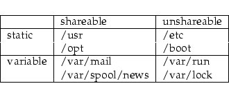
The primary concern used to balance these considerations, which favor placing many things on the root filesystem, is the goal of keeping root as small as reasonably possible. For several reasons, it is desirable to keep the root filesystem small:
Software must never create or require special files or subdirectories in the root directory. Other locations in the FHS hierarchy provide more than enough flexibility for any package.
There are several reasons why introducing a new subdirectory of the root filesystem is prohibited:
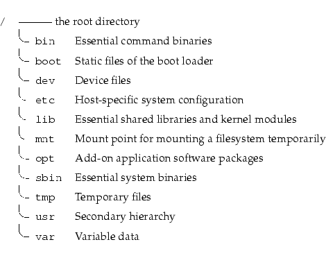
Each directory listed above is specified in detail in separate subsections below. /usr and /var each have a complete section in this document due to the complexity of those directories.
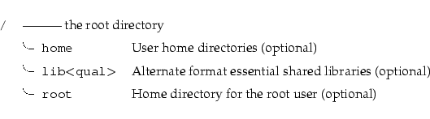
Each directory listed above is specified in detail in separate subsections below.
The following commands, or symbolic links to commands, are required in /bin.
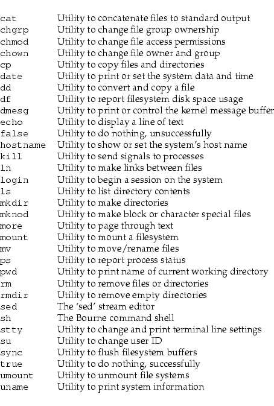
If /bin/sh is not a true Bourne shell, it must be a hard or symbolic link to the real shell command.
The [ and test commands must be placed together in either /bin or /usr/bin.
The requirement for the [ and test commands to be included as binaries (even if implemented internally by the shell) is shared with the POSIX.2 standard.
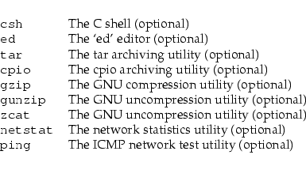
If the gunzip and zcat programs exist, they must be symbolic or hard links to gzip. /bin/csh may be a symbolic link to /bin/tcsh or /usr/bin/tcsh.
Conversely, if no restoration from the root partition is ever expected, then these binaries might be omitted (e.g., a ROM chip root, mounting /usr through NFS). If restoration of a system is planned through the network, then ftp or tftp (along with everything necessary to get an ftp connection) must be available on the root partition.
Certain MIPS systems require a /boot partition that is a mounted MS-DOS filesystem or whatever other filesystem type is accessible for the firmware. This may result in restrictions with respect to usable filenames within /boot (only for affected systems). ]
If it is possible that devices in /dev will need to be manually created, /dev must contain a command named MAKEDEV, which can create devices as needed. It may also contain a MAKEDEV.local for any local devices.
If required, MAKEDEV must have provisions for creating any device that may be found on the system, not just those that a particular implementation installs.
The following directories, or symbolic links to directories are required in /etc:
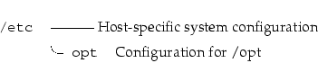
The following directories, or symbolic links to directories must be in /etc, if the corresponding subsystem is installed:
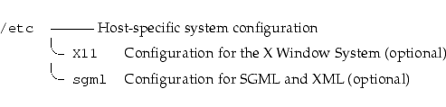
The following files, or symbolic links to files, must be in /etc if the corresponding subsystem is installed:(footnote follows)
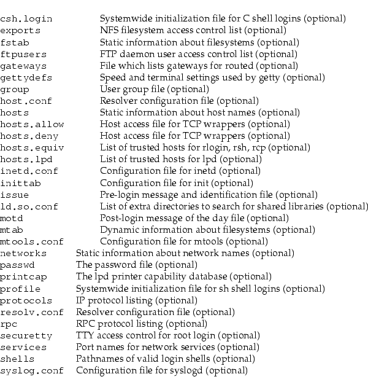
[Systems that use the shadow password suite will have additional configuration files in /etc (/etc/shadow and others) and programs in /usr/sbin (useradd, usermod, and others). ]
mtab does not fit the static nature of /etc: it is excepted for historical reasons.(footnote follows) [On some Linux systems, this may be a symbolic link to /proc/mounts, in which case this exception is not required. ]
Host-specific configuration files for add-on application software packages must be installed within the directory /etc/opt/<package>, where <package> is the name of the subtree in /opt where the static data from that package is stored.
No structure is imposed on the internal arrangement of /etc/opt/<package>.
If a configuration file must reside in a different location in order for the package or system to function properly, it may be placed in a location other than /etc/opt/<package>.
/etc/X11 is the location for all X11 host-specific configuration. This directory is necessary to allow local control if /usr is mounted read only.
The following files, or symbolic links to files, must be in /etc/X11 if the corresponding subsystem is installed:
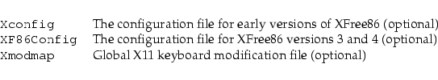
Subdirectories of /etc/X11 may include those for xdm and for any other programs (some window managers, for example) that need them.(footnote follows) [/etc/X11/xdm holds the configuration files for xdm. These are most of the files previously found in /usr/lib/X11/xdm. Some local variable data for xdm is stored in /var/lib/xdm. ]We recommend that window managers with only one configuration file which is a default .*wmrc file must name it system.*wmrc (unless there is a widely-accepted alternative name) and not use a subdirectory. Any window manager subdirectories must be identically named to the actual window manager binary.
Generic configuration files defining high-level parameters of the SGML or XML systems are installed here. Files with names *.conf indicate generic configuration files. File with names *.cat are the DTD-specific centralized catalogs, containing references to all other catalogs needed to use the given DTD. The super catalog file catalog references all the centralized catalogs.
On small systems, each user's directory is typically one of the many subdirectories of /home such as /home/smith, /home/torvalds, /home/operator, etc. On large systems (especially when the /home directories are shared amongst many hosts using NFS) it is useful to subdivide user home directories. Subdivision may be accomplished by using subdirectories such as /home/staff, /home/guests, /home/students, etc. ]
The setup will differ from host to host. Therefore, no program should rely on this location.(footnote follows) [If you want to find out a user's home directory, you should use the getpwent(3) library function rather than relying on /etc/passwd because user information may be stored remotely using systems such as NIS. ]
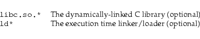
If a C preprocessor is installed, /lib/cpp must be a reference to it, for historical reasons.(footnote follows) [The usual placement of this binary is /usr/lib/gcc-lib/<target>/<version>/cpp. /lib/cpp can either point at this binary, or at any other reference to this binary which exists in the filesystem. (For example, /usr/bin/cpp is also often used.) ]
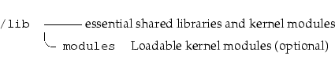
This directory must not be used by installation programs: a suitable temporary directory not in use by the system must be used instead.
A package to be installed in /opt must locate its static files in a separate /opt/<package> directory tree, where <package> is a name that describes the software package.
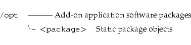
The directories /opt/bin, /opt/doc, /opt/include, /opt/info, /opt/lib, and /opt/man are reserved for local system administrator use. Packages may provide "front-end" files intended to be placed in (by linking or copying) these reserved directories by the local system administrator, but must function normally in the absence of these reserved directories.
Programs to be invoked by users must be located in the directory /opt/<package>/bin. If the package includes UNIX manual pages, they must be located in /opt/<package>/man and the same substructure as /usr/share/man must be used.
Package files that are variable (change in normal operation) must be installed in /var/opt. See the section on /var/opt for more information.
Host-specific configuration files must be installed in /etc/opt. See the section on /etc for more information.
No other package files may exist outside the /opt, /var/opt, and /etc/opt hierarchies except for those package files that must reside in specific locations within the filesystem tree in order to function properly. For example, device lock files must be placed in /var/lock and devices must be located in /dev.
Distributions may install software in /opt, but must not modify or delete software installed by the local system administrator without the assent of the local system administrator.
The Intel Binary Compatibility Standard v. 2 (iBCS2) also provides a similar structure for /opt.
Generally, all data required to support a package on a system must be present within /opt/<package>, including files intended to be copied into /etc/opt/<package> and /var/opt/<package> as well as reserved directories in /opt.
The minor restrictions on distributions using /opt are necessary because conflicts are possible between distribution-installed and locally-installed software, especially in the case of fixed pathnames found in some binary software.
We recommend against using the root account for tasks that can be performed as an unprivileged user, and that it be used solely for system administration. For this reason, we recommend that subdirectories for mail and other applications not appear in the root account's home directory, and that mail for administration roles such as root, postmaster, and webmaster be forwarded to an appropriate user. ]
For example, files such as chfn which users only occasionally use must still be placed in /usr/bin. ping, although it is absolutely necessary for root (network recovery and diagnosis) is often used by users and must live in /bin for that reason.
We recommend that users have read and execute permission for everything in /sbin except, perhaps, certain setuid and setgid programs. The division between /bin and /sbin was not created for security reasons or to prevent users from seeing the operating system, but to provide a good partition between binaries that everyone uses and ones that are primarily used for administration tasks. There is no inherent security advantage in making /sbin off-limits for users. ]
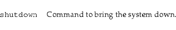
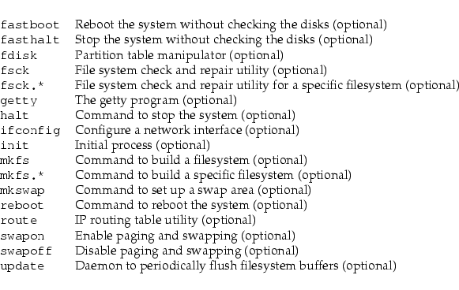
Programs must not assume that any files or directories in /tmp are preserved between invocations of the program.
Although data stored in /tmp may be deleted in a site-specific manner, it is recommended that files and directories located in /tmp be deleted whenever the system is booted.
FHS added this recommendation on the basis of historical precedent and common practice, but did not make it a requirement because system administration is not within the scope of this standard.
Large software packages must not use a direct subdirectory under the /usr hierarchy.
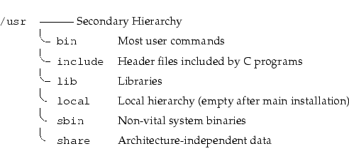
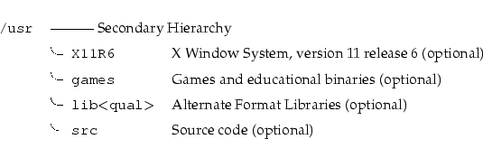
An exception is made for the X Window System because of considerable precedent and widely-accepted practice.
The following symbolic links to directories may be present. This possibility is based on the need to preserve compatibility with older systems until all implementations can be assumed to use the /var hierarchy.
/usr/spool -> /var/spool
/usr/tmp -> /var/tmp
/usr/spool/locks -> /var/lock
Once a system no longer requires any one of the above symbolic links, the link may be removed, if desired.
To simplify matters and make XFree86 more compatible with the X Window System on other systems, the following symbolic links must be present if /usr/X11R6 exists:
/usr/bin/X11 -> /usr/X11R6/bin
/usr/lib/X11 -> /usr/X11R6/lib/X11
/usr/include/X11 -> /usr/X11R6/include/X11
In general, software must not be installed or managed via the above symbolic links. They are intended for utilization by users only. The difficulty is related to the release version of the X Window System -- in transitional periods, it is impossible to know what release of X11 is in use.
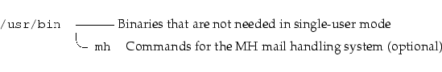
/usr/bin/X11 must be a symlink to /usr/X11R6/bin if the latter exists.
The following files, or symbolic links to files, must be in /usr/bin, if the corresponding subsystem is installed:
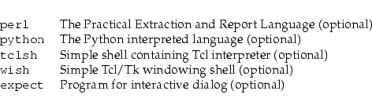
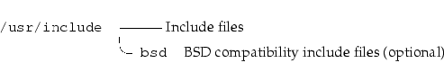
The symbolic link /usr/include/X11 must link to /usr/X11R6/include/X11 if the latter exists.
Applications may use a single subdirectory under /usr/lib. If an application uses a subdirectory, all architecture-dependent data exclusively used by the application must be placed within that subdirectory.(footnote follows) [For example, the perl5 subdirectory for Perl 5 modules and libraries. ]
For historical reasons, /usr/lib/sendmail must be a symbolic link to /usr/sbin/sendmail if the latter exists.(footnote follows) [Some executable commands such as makewhatis and sendmail have also been traditionally placed in /usr/lib. makewhatis is an internal binary and must be placed in a binary directory; users access only catman. Newer sendmail binaries are now placed by default in /usr/sbin. Additionally, systems using a sendmail-compatible mail transfer agent must provide /usr/sbin/sendmail as a symbolic link to the appropriate executable. ]
If /lib/X11 exists, /usr/lib/X11 must be a symbolic link to /lib/X11, or to whatever /lib/X11 is a symbolic link to.(footnote follows) [Host-specific data for the X Window System must not be stored in /usr/lib/X11. Host-specific configuration files such as Xconfig or XF86Config must be stored in /etc/X11. This includes configuration data such as system.twmrc even if it is only made a symbolic link to a more global configuration file (probably in /usr/X11R6/lib/X11). ]
Locally installed software must be placed within /usr/local rather than /usr unless it is being installed to replace or upgrade software in /usr.(footnote follows) [Software placed in / or /usr may be overwritten by system upgrades (though we recommend that distributions do not overwrite data in /etc under these circumstances). For this reason, local software must not be placed outside of /usr/local without good reason. ]
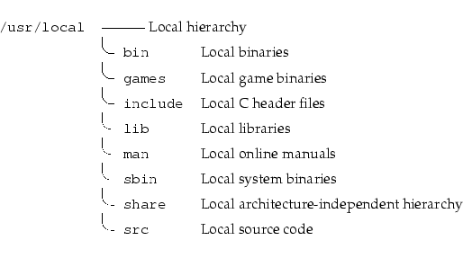
No other directories, except those listed below, may be in /usr/local after first installing a FHS-compliant system.
This hierarchy is intended to be shareable among all architecture platforms of a given OS; thus, for example, a site with i386, Alpha, and PPC platforms might maintain a single /usr/share directory that is centrally-mounted. Note, however, that /usr/share is generally not intended to be shared by different OSes or by different releases of the same OS.
Any program or package which contains or requires data that doesn't need to be modified should store that data in /usr/share (or /usr/local/share, if installed locally). It is recommended that a subdirectory be used in /usr/share for this purpose.
Game data stored in /usr/share/games must be purely static data. Any modifiable files, such as score files, game play logs, and so forth, should be placed in /var/games.
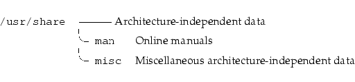
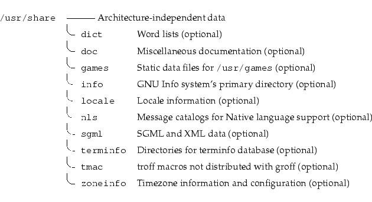
It is recommended that application-specific, architecture-independent directories be placed here. Such directories include groff, perl, ghostscript, texmf, and kbd (Linux) or syscons (BSD). They may, however, be placed in /usr/lib for backwards compatibility, at the distributor's discretion. Similarly, a /usr/lib/games hierarchy may be used in addition to the /usr/share/games hierarchy if the distributor wishes to place some game data there.
This directory is the home for word lists on the system; Traditionally this directory contains only the English words file, which is used by look(1) and various spelling programs. words may use either American or British spelling.
The following files, or symbolic links to files, must be in /usr/share/dict, if the corresponding subsystem is installed:
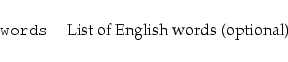
Sites that require both American and British spelling may link words to /usr/share/dict/american-english or /usr/share/dict/british-english.
Word lists for other languages may be added using the English name for that language, e.g., /usr/share/dict/french, /usr/share/dict/danish, etc. These should, if possible, use an ISO 8859 character set which is appropriate for the language in question; if possible the Latin1 (ISO 8859-1) character set should be used (this is often not possible).
Other word lists must be included here, if present.
This section details the organization for manual pages throughout the system, including /usr/share/man. Also refer to the section on /var/cache/man.
The primary <mandir> of the system is /usr/share/man. /usr/share/man contains manual information for commands and data under the / and /usr filesystems.(footnote follows) [Obviously, there are no manual pages in / because they are not required at boot time nor are they required in emergencies.(footnote follows) ] [Really. ]
Manual pages are stored in <mandir>/<locale>/man<section>/<arch>. An explanation of <mandir>, <locale>, <section>, and <arch> is given below.
A description of each section follows:
The following directories, or symbolic links to directories, must be in /usr/share/<mandir>/<locale>, unless they are empty:(footnote follows) [For example, if /usr/local/man has no manual pages in section 4 (Devices), then /usr/local/man/man4 may be omitted. ]
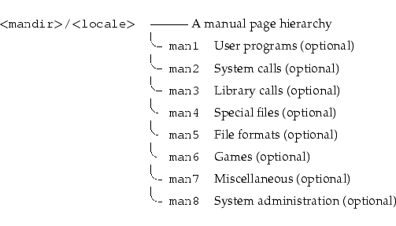
The component <section> describes the manual section.
Provisions must be made in the structure of /usr/share/man to support manual pages which are written in different (or multiple) languages. These provisions must take into account the storage and reference of these manual pages. Relevant factors include language (including geographical-based differences), and character code set.
This naming of language subdirectories of /usr/share/man is based on Appendix E of the POSIX 1003.1 standard which describes the locale identification string -- the most well-accepted method to describe a cultural environment. The <locale> string is:
The <language> field must be taken from ISO 639 (a code for the representation of names of languages). It must be two characters wide and specified with lowercase letters only.
The <territory> field must be the two-letter code of ISO 3166 (a specification of representations of countries), if possible. (Most people are familiar with the two-letter codes used for the country codes in email addresses.(footnote follows)) It must be two characters wide and specified with uppercase letters only. [A major exception to this rule is the United Kingdom, which is `GB' in the ISO 3166, but `UK' for most email addresses. ]
The <character-set> field must represent the standard describing the character set. If the <character-set> field is just a numeric specification, the number represents the number of the international standard describing the character set. It is recommended that this be a numeric representation if possible (ISO standards, especially), not include additional punctuation symbols, and that any letters be in lowercase.
A parameter specifying a <version> of the profile may be placed after the <character-set> field, delimited by a comma. This may be used to discriminate between different cultural needs; for instance, dictionary order versus a more systems-oriented collating order. This standard recommends not using the <version> field, unless it is necessary.
Systems which use a unique language and code set for all manual pages may omit the <locale> substring and store all manual pages in <mandir>. For example, systems which only have English manual pages coded with ASCII, may store manual pages (the man<section> directories) directly in /usr/share/man. (That is the traditional circumstance and arrangement, in fact.)
Countries for which there is a well-accepted standard character code set may omit the <character-set> field, but it is strongly recommended that it be included, especially for countries with several competing standards.
Various examples:
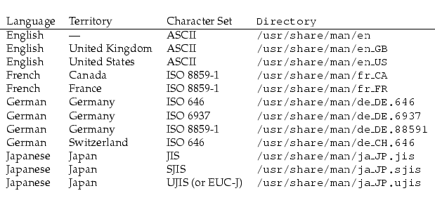
Similarly, provision must be made for manual pages which are architecture-dependent, such as documentation on device-drivers or low-level system administration commands. These must be placed under an <arch> directory in the appropriate man<section> directory; for example, a man page for the i386 ctrlaltdel(8) command might be placed in /usr/share/man/<locale>/man8/i386/ctrlaltdel.8.
Manual pages for commands and data under /usr/local are stored in /usr/local/man. Manual pages for X11R6 are stored in /usr/X11R6/man. It follows that all manual page hierarchies in the system must have the same structure as /usr/share/man.
The cat page sections (cat<section>) containing formatted manual page entries are also found within subdirectories of <mandir>/<locale>, but are not required nor may they be distributed in lieu of nroff source manual pages.
The numbered sections "1" through "8" are traditionally defined. In general, the file name for manual pages located within a particular section end with .<section>.
In addition, some large sets of application-specific manual pages have an additional suffix appended to the manual page filename. For example, the MH mail handling system manual pages must have mh appended to all MH manuals. All X Window System manual pages must have an x appended to the filename.
The practice of placing various language manual pages in appropriate subdirectories of /usr/share/man also applies to the other manual page hierarchies, such as /usr/local/man and /usr/X11R6/man. (This portion of the standard also applies later in the section on the optional /var/cache/man structure.)
This directory contains miscellaneous architecture-independent files which don't require a separate subdirectory under /usr/share.
The following files, or symbolic links to files, must be in /usr/share/misc, if the corresponding subsystem is installed:
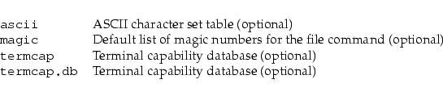
Other (application-specific) files may appear here,(footnote follows) but a distributor
may place them in /usr/lib at their discretion.
[Some such files include:
]
/usr/share/sgml contains architecture-independent files used by SGML or XML applications, such as ordinary catalogs (not the centralized ones, see /etc/sgml), DTDs, entities, or style sheets.
The following directories, or symbolic links to directories, must be in /usr/share/sgml, if the corresponding subsystem is installed:
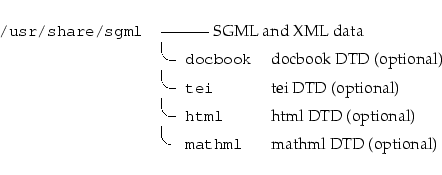
Other files that are not specific to a given DTD may reside in their own subdirectory.
/var contains variable data files. This includes spool directories and files, administrative and logging data, and transient and temporary files.
Some portions of /var are not shareable between different systems. For instance, /var/log, /var/lock, and /var/run. Other portions may be shared, notably /var/mail, /var/cache/man, /var/cache/fonts, and /var/spool/news.
/var is specified here in order to make it possible to mount /usr read-only. Everything that once went into /usr that is written to during system operation (as opposed to installation and software maintenance) must be in /var.
If /var cannot be made a separate partition, it is often preferable to move /var out of the root partition and into the /usr partition. (This is sometimes done to reduce the size of the root partition or when space runs low in the root partition.) However, /var must not be linked to /usr because this makes separation of /usr and /var more difficult and is likely to create a naming conflict. Instead, link /var to /usr/var.
Applications must generally not add directories to the top level of /var. Such directories should only be added if they have some system-wide implication, and in consultation with the FHS mailing list.
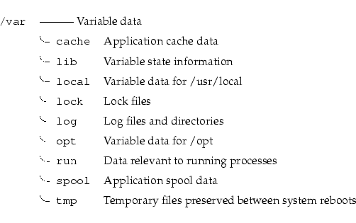
Several directories are `reserved' in the sense that they must not be used arbitrarily by some new application, since they would conflict with historical and/or local practice. They are:
/var/backups
/var/cron
/var/msgs
/var/preserve
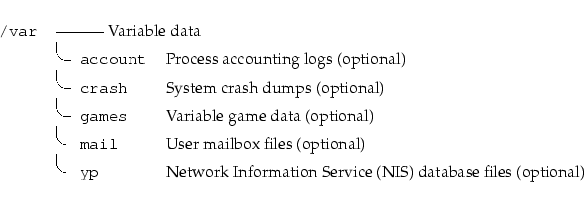
Files located under /var/cache may be expired in an application specific manner, by the system administrator, or both. The application must always be able to recover from manual deletion of these files (generally because of a disk space shortage). No other requirements are made on the data format of the cache directories.
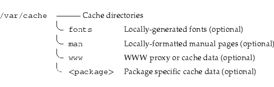
The directory /var/cache/fonts should be used to store any dynamically-created fonts. In particular, all of the fonts which are automatically generated by mktexpk must be located in appropriately-named subdirectories of /var/cache/fonts.(footnote follows) [This standard does not currently incorporate the TEX Directory Structure (a document that describes the layout TEX files and directories), but it may be useful reading. It is located at ftp://ctan.tug.org/tex/. ]
Other dynamically created fonts may also be placed in this tree, under appropriately-named subdirectories of /var/cache/fonts.
This directory provides a standard location for sites that provide a read-only /usr partition, but wish to allow caching of locally-formatted man pages. Sites that mount /usr as writable (e.g., single-user installations) may choose not to use /var/cache/man and may write formatted man pages into the cat<section> directories in /usr/share/man directly. We recommend that most sites use one of the following options instead:
The structure of /var/cache/man needs to reflect both the fact of multiple man page hierarchies and the possibility of multiple language support.
Given an unformatted manual page that normally appears in <path>/man/<locale>/man<section>, the directory to place formatted man pages in is /var/cache/man/<catpath>/<locale>/cat<section>, where <catpath> is derived from <path> by removing any leading usr and/or trailing share pathname components.(footnote follows) (Note that the <locale> component may be missing.) [For example, /usr/share/man/man1/ls.1 is formatted into /var/cache/man/cat1/ls.1, and /usr/X11R6/man/<locale>/man3/XtClass.3x into /var/cache/man/X11R6/<locale>/cat3/XtClass.3x. ]
Man pages written to /var/cache/man may eventually be transferred to the appropriate preformatted directories in the source man hierarchy or expired; likewise formatted man pages in the source man hierarchy may be expired if they are not accessed for a period of time.
If preformatted manual pages come with a system on read-only media (a CD-ROM, for instance), they must be installed in the source man hierarchy (e.g. /usr/share/man/cat<section>). /var/cache/man is reserved as a writable cache for formatted manual pages.
This hierarchy holds state information pertaining to an application or the system. State information is data that programs modify while they run, and that pertains to one specific host. Users must never need to modify files in /var/lib to configure a package's operation.
State information is generally used to preserve the condition of an application (or a group of inter-related applications) between invocations and between different instances of the same application. State information should generally remain valid after a reboot, should not be logging output, and should not be spooled data.
An application (or a group of inter-related applications) must use a subdirectory of /var/lib for its data.(footnote follows) There is one required subdirectory, /var/lib/misc, which is intended for state files that don't need a subdirectory; the other subdirectories should only be present if the application in question is included in the distribution. [An important difference between this version of this standard and previous ones is that applications are now required to use a subdirectory of /var/lib. ]
/var/lib/<name> is the location that must be used for all distribution packaging support. Different distributions may use different names, of course.
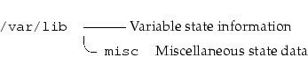
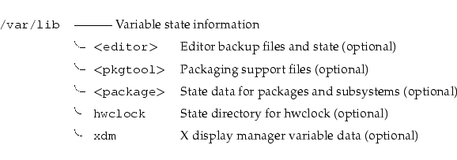
These directories contain saved files generated by any unexpected termination of an editor (e.g., elvis, jove, nvi).
Other editors may not require a directory for crash-recovery files, but may require a well-defined place to store other information while the editor is running. This information should be stored in a subdirectory under /var/lib (for example, GNU Emacs would place lock files in /var/lib/emacs/lock).
Future editors may require additional state information beyond crash-recovery files and lock files -- this information should also be placed under /var/lib/<editor>.
Editor-specific lock files are usually quite different from the device or resource lock files that are stored in /var/lock and, hence, are stored under /var/lib.
This directory contains the file /var/lib/hwclock/adjtime.
This directory contains variable data not placed in a subdirectory in /var/lib. An attempt should be made to use relatively unique names in this directory to avoid namespace conflicts.(footnote follows) [This hierarchy should contain files stored in /var/db in current BSD releases. These include locate.database and mountdtab, and the kernel symbol database(s). ]
Lock files for devices and other resources shared by multiple applications, such as the serial device lock files that were originally found in either /usr/spool/locks or /usr/spool/uucp, must now be stored in /var/lock. The naming convention which must be used is LCK.. followed by the base name of the device file. For example, to lock /dev/ttyS0 the file LCK..ttyS0 would be created.
(footnote follows) [Then, anything wishing to use /dev/ttyS0 can read the lock file and act accordingly (all locks in /var/lock should be world-readable). ]
The format used for the contents of such lock files must be the HDB UUCP lock file format. The HDB format is to store the process identifier (PID) as a ten byte ASCII decimal number, with a trailing newline. For example, if process 1230 holds a lock file, it would contain the eleven characters: space, space, space, space, space, space, one, two, three, zero, and newline.
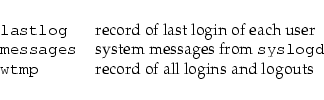
User mailbox files in this location must be stored in the standard UNIX mailbox format.
It is important to note that there is no requirement to physically move the mail spool to this location. However, programs and header files must be changed to use /var/mail.
The internal format of PID files remains unchanged. The file must consist of the process identifier in ASCII-encoded decimal, followed by a newline character. For example, if crond was process number 25, /var/run/crond.pid would contain three characters: two, five, and newline.
Programs that read PID files should be somewhat flexible in what they accept; i.e., they should ignore extra whitespace, leading zeroes, absence of the trailing newline, or additional lines in the PID file. Programs that create PID files should use the simple specification located in the above paragraph.
The utmp file, which stores information about who is currently using the system, is located in this directory.
Programs that maintain transient UNIX-domain sockets must place them in this directory.
[UUCP lock files must be placed in /var/lock. See the above section on /var/lock. ]
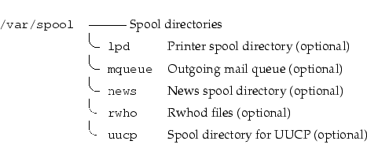
The lock file for lpd, lpd.lock, must be placed in /var/spool/lpd. It is suggested that the lock file for each printer be placed in the spool directory for that specific printer and named lock.
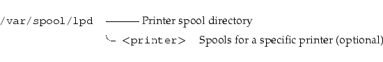
This directory holds the rwhod information for other systems on the local net.
Files and directories located in /var/tmp must not be deleted when the system is booted. Although data stored in /var/tmp is typically deleted in a site-specific manner, it is recommended that deletions occur at a less frequent interval than /tmp.
This section is for additional requirements and recommendations that only apply to a specific operating system. The material in this section should never conflict with the base standard.
This is the annex for the Linux operating system.
On Linux systems, if the kernel is located in /, we recommend using the names vmlinux or vmlinuz, which have been used in recent Linux kernel source packages.
Linux systems which require them place these additional files into /bin.
All devices and special files in /dev should adhere to the Linux Allocated Devices document, which is available with the Linux kernel source. It is maintained by H. Peter Anvin <hpa@zytor.com>.
Symbolic links in /dev should not be distributed with Linux systems except as provided in the Linux Allocated Devices document.
Linux systems which require them place these additional files into /etc.
The proc filesystem is the de-facto standard Linux method for handling process and system information, rather than /dev/kmem and other similar methods. We strongly encourage this for the storage and retrieval of process information as well as other kernel and memory information.
Linux systems place these additional files into /sbin.
Static ln (sln) and static sync (ssync) are useful when things go wrong. The primary use of sln (to repair incorrect symlinks in /lib after a poorly orchestrated upgrade) is no longer a major concern now that the ldconfig program (usually located in /usr/sbin) exists and can act as a guiding hand in upgrading the dynamic libraries. Static sync is useful in some emergency situations. Note that these need not be statically linked versions of the standard ln and sync, but may be.
The ldconfig binary is optional for /sbin since a site may choose to run ldconfig at boot time, rather than only when upgrading the shared libraries. (It's not clear whether or not it is advantageous to run ldconfig on each boot.) Even so, some people like ldconfig around for the following (all too common) situation:
So as to cope with the fact that some keyboards come up with such a high repeat rate as to be unusable, kbdrate may be installed in /sbin on some systems.
Since the default action in the kernel for the Ctrl-Alt-Del key combination is an instant hard reboot, it is generally advisable to disable the behavior before mounting the root filesystem in read-write mode. Some init suites are able to disable Ctrl-Alt-Del, but others may require the ctrlaltdel program, which may be installed in /sbin on those systems.
These symbolic links are required if a C or C++ compiler is installed and only for systems not based on glibc.
/usr/include/asm -> /usr/src/linux/include/asm-<arch>
/usr/include/linux -> /usr/src/linux/include/linux
For systems based on glibc, there are no specific guidelines for this directory. For systems based on Linux libc revisions prior to glibc, the following guidelines and rationale apply:
The only source code that should be placed in a specific location is the Linux kernel source code. It is located in /usr/src/linux.
If a C or C++ compiler is installed, but the complete Linux kernel source code is not installed, then the include files from the kernel source code must be located in these directories:
/usr/src/linux/include/asm-<arch>
/usr/src/linux/include/linux
<arch> is the name of the system architecture.
Note: /usr/src/linux may be a symbolic link to a kernel source code tree.
This directory contains the variable data for the cron and at programs.
The FHS mailing list is located at <fhs-discuss@ucsd.edu>. To subscribe to the list send mail to <listserv@ucsd.edu> with body "ADD fhs-discuss".
Thanks to Network Operations at the University of California at San Diego who allowed us to use their excellent mailing list server.
As noted in the introduction, please do not send mail to the mailing list without first contacting the FHS editor or a listed contributor.
The process of developing a standard filesystem hierarchy began in August 1993 with an effort to restructure the file and directory structure of Linux. The FSSTND, a filesystem hierarchy standard specific to the Linux operating system, was released on February 14, 1994. Subsequent revisions were released on October 9, 1994 and March 28, 1995.
In early 1995, the goal of developing a more comprehensive version of FSSTND to address not only Linux, but other UNIX-like systems was adopted with the help of members of the BSD development community. As a result, a concerted effort was made to focus on issues that were general to UNIX-like systems. In recognition of this widening of scope, the name of the standard was changed to Filesystem Hierarchy Standard or FHS for short.
Volunteers who have contributed extensively to this standard are listed at the end of this document. This standard represents a consensus view of those and other contributors.
Here are some of the guidelines that have been used in the development of this standard:
This document specifies a standard filesystem hierarchy for FHS filesystems by specifying the location of files and directories, and the contents of some system files.
This standard has been designed to be used by system integrators, package developers, and system administrators in the construction and maintenance of FHS compliant filesystems. It is primarily intended to be a reference and is not a tutorial on how to manage a conforming filesystem hierarchy.
The FHS grew out of earlier work on FSSTND, a filesystem organization standard for the Linux operating system. It builds on FSSTND to address interoperability issues not just in the Linux community but in a wider arena including 4.4BSD-based operating systems. It incorporates lessons learned in the BSD world and elsewhere about multi-architecture support and the demands of heterogeneous networking.
Although this standard is more comprehensive than previous attempts at filesystem hierarchy standardization, periodic updates may become necessary as requirements change in relation to emerging technology. It is also possible that better solutions to the problems addressed here will be discovered so that our solutions will no longer be the best possible solutions. Supplementary drafts may be released in addition to periodic updates to this document. However, a specific goal is backwards compatibility from one release of this document to the next.
Comments related to this standard are welcome. Any comments or suggestions for changes may be directed to the FHS editor (Daniel Quinlan <quinlan@pathname.com>) or the FHS mailing list. Typographical or grammatical comments should be directed to the FHS editor.
Before sending mail to the mailing list it is requested that you first contact the FHS editor in order to avoid excessive re-discussion of old topics.
Questions about how to interpret items in this document may occasionally arise. If you have need for a clarification, please contact the FHS editor. Since this standard represents a consensus of many participants, it is important to make certain that any interpretation also represents their collective opinion. For this reason it may not be possible to provide an immediate response unless the inquiry has been the subject of previous discussion.
The developers of the FHS wish to thank the developers, system administrators, and users whose input was essential to this standard. We wish to thank each of the contributors who helped to write, compile, and compose this standard.
The FHS Group also wishes to thank those Linux developers who supported the FSSTND, the predecessor to this standard. If they hadn't demonstrated that the FSSTND was beneficial, the FHS could never have evolved.